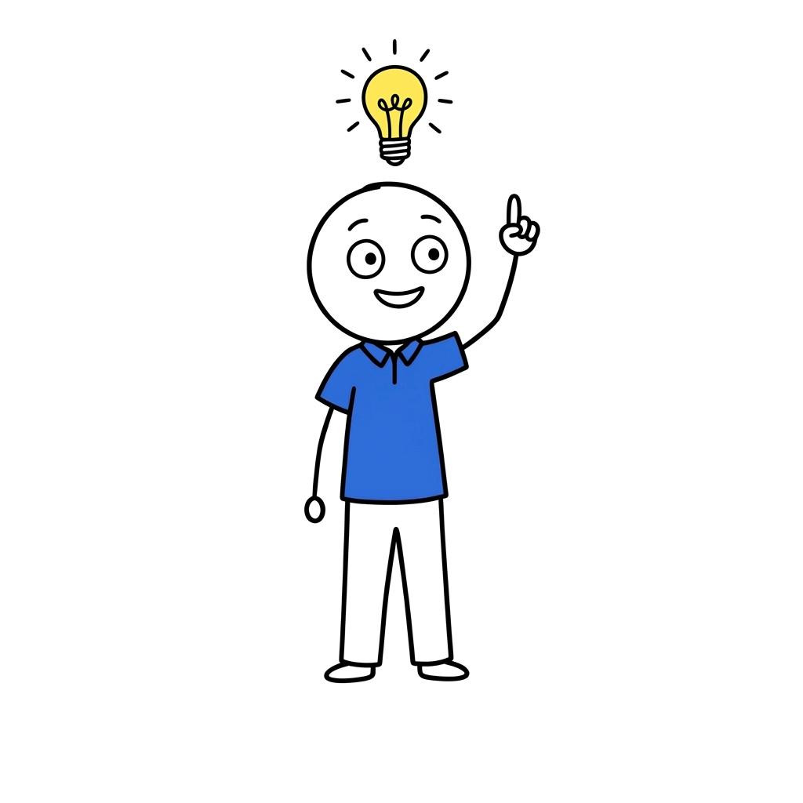

Nine questions about how you really work when the factory is on fire and the boss is waiting. Three minutes. No email needed to see your result.
Want the weekly move for your type?
One real factory-office AI move per week from Ah Hock's desk, plus the free 10-point Pre-Ship Checklist in your first email. No spam, unsubscribe anytime.
This is a 3-minute mirror for your work habits, written by a BD guy, not a psychologist. Use it to see yourself clearer. Don't put it in anyone's HR file.